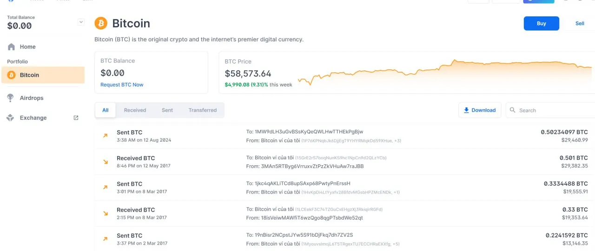

Executive Summary
- The Challenge: A decade of undocumented, patchwork code left the flagship web wallet tethered to legacy account standards, suffering from severe performance degradation (20s+ load times), and structurally blocked from modern revenue channels. Decommissioning the application outright wasn't an option: doing so without a migration path risked permanently locking a significant cohort of users out of their self-custodial funds.
- The Strategy: As Product Lead, I steered a lean engineering squad (1 EM, 1 Staff Engineer, 1 Mid-Level Engineer) as we conducted a ground-up rewrite of the web app from vanilla JavaScript to a modern React/TypeScript architecture. To protect user assets, we engineered an automated, background account migration pipeline and executed a data-monitored, phased rollout to eliminate platform dependency with zero user friction.
Problem Statement
For over ten years, consecutive engineering teams expanded the core web wallet using legacy primitives. While the mobile app successfully transitioned to modern standards, the web platform remained trapped in technical debt. Because a massive, highly active segment of the user base strictly preferred web over mobile, simply sunsetting the web app would have permanently cut users off from their self-custodial funds, an unacceptable operational and reputational risk. This legacy debt created a critical fracture across three key operational areas:
- Decoupled & Fragmented UX: Web and mobile diverged into completely separate product experiences. This split the user base, created brand inconsistency, and doubled cross-platform engineering overhead as teams maintained two entirely different codebases.
- Severe Performance Decay: Legacy, unoptimised data-fetching layers caused debilitating front-end rendering stutter. Wallet load times frequently exceeded 20 seconds, directly driving user frustration and drop-off.
- Lost Market Opportunity: The brittle legacy architecture could not support modern revenue verticals such as custodial earning programs or detailed asset discovery. This effectively starved the business of top-line growth during critical market windows.

1. Technical Discovery & Cross-Team Scoping
Before touching a single line of code, we had to map a highly fragmented, undocumented legacy system. Operating blind or making assumptions about a decade of historical infrastructure wasn't an option. We structured discovery and audited systematically to de-risk the rewrite and establish our product baseline across three critical workstreams:
- Mobile Parity Mapping: Conducted a comprehensive gap analysis to map the feature delta between the legacy web app and the modern mobile platform. This created our definitive product requirement roadmap to guarantee true cross-platform parity.
- Legacy Architecture & Ownership Mapping: Broke down the technical scope into explicit work packages with clear ownership lines. We mapped every upstream dependency, ensuring strict structural alignment with the Backend and SRE (Site Reliability Engineering) teams.
- Regulatory Impact Assessment: Partnered with Legal and Marketing early to map all UK Financial Promotions (FinProm) requirements against our proposed UI changes. This ensured the modernisation would fully comply with FCA guidelines around cryptocurrency asset promotions prior to deployment.
2. Moving to React, TypeScript & Modern State Management
The legacy application was built entirely on unoptimised, raw vanilla JavaScript. Together with my team, we designed a migration strategy centered on modern framework efficiency: React, TypeScript, and optimised API orchestration.
[Legacy Vanilla JS] -------------> [React + TypeScript Architecture] - Linear, un-cached data requests - Asynchronous parallel data fetching & caching - UI stutters & blocking thread - Component-driven virtual DOM for fluid rendering - 20-second page load times - Sub-second page load times & instant state updates - Fragile runtime behavior - Strict compile-time validation to eliminate runtime exceptions
- Boosting Performance: Vanilla JS required manual DOM manipulation and sequential data-fetching calls that blocked the browser's main thread. Shifting to React introduced a component-driven framework with optimised, asynchronous parallel data fetching, ensuring the UI rendered fluidly while fetching balances in the background.
- Type-Safety & System Stability: By implementing TypeScript, we established strict compile-time validation for handling complex payloads. This cut client-side runtime exceptions to near-zero and prevented architectural regression during rapid feature additions.
3. The Migration Pipeline
To safely transition users across application versions, we implemented a cookie-based routing mechanism to manage traffic allocation. While technically mutable on the client side, this lightweight approach successfully mitigated asset migration risks; the small subset of users who manually cleared cookies were simply routed safely to an environment corresponding to their new cookie value.
[User Authenticates]
|
+---------------+---------------+
| |
[Session Dice Roll] [Background Service Checks]
(Random Value: 1-100) - Flags legacy account versions
| - Invisibly updates DB schema to
(Forwarded to New App) Unified Universal Wallet Standard
| |
[Monitored Rollout (5%)] [Deprecated V3 Legacy Architecture]
|
(Fail-safe Option)
[Explicit Downgrade Path]
- User Authentication & Routing: To tightly control deployment risk, users were assigned a randomised session value between 1 and 100. Initially, only traffic falling into the 1–5 range (a 5% cohort) was routed to the new application. We closely monitored this cohort's behaviors using an Amplitude dashboard, benchmarking performance against the legacy app to give stakeholders absolute visibility before scaling traffic.
- Upgrading Accounts: When a user authenticated into the new application, a silent background job checked their account version flag. If it detected a legacy account (Type 1 or Type 2), the system automatically migrated their wallet metadata and derivation tracking schemas on the backend to support the Unified Universal Wallet Standard invisibly. This allowed the new client to seamlessly parse legacy payloads and established a clean deprecation path for the V3 architecture.
- Risk Mitigation & Closed-Loop Feedback: If a user encountered a critical edge case or preferred the legacy layout, we provided an explicit, single-click downgrade path back to V3. Upon downgrading, users were presented with a brief, contextual feedback form (covering missing features, bugs, or UX preferences). This structured qualitative data was funneled directly into weekly product prioritisation loops.
4. Team Execution
Operating with a hyper-lean team required high communication density and clear, un-compromised operational standards:
- Ruthless Prioritisation: I managed weekly sprints with a squad of four. We eliminated bureaucratic drag by focusing entirely on core, non-negotiable transactional functionality (Send, Receive, Buy, Sell) required to unlock subsequent rollout tiers.
- The Documentation Mandate: To ensure the organisation would never have to reverse-engineer this logic again, every single pipeline, API boundary, and architectural choice was meticulously documented with explicit owner listings.
- Continuous Feedback: We deployed early internal betas across the company. I ran weekly testing sessions with both technical and non-technical internal teams using dedicated, staging back-office funded accounts (covering both custodial and non-custodial archetypes). When public users flagged edge cases, I paired directly with the Customer Support team to manage outreach, bucket feedback, and prioritise fixes.
Business Outcomes
The modernisation of the web wallet yielded immediate, compounding dividends across top-line revenue, user retention, and infrastructure efficiency.
Revenue & Conversion Optimisation
- Trading Increase: The jump from a 20-second load time to a sub-second fluid experience and updated UX directly translated into user trust. Conversion into trading rates among web users increased by approximately 7% relative tobefore, scaling transactional revenue proportionally.
- Trend Agility: By capitalizing on immediate market trends, we isolated trending assets in the new pricing service, built out categorization, and spun up memecoin trading into its own dedicated app section. This feature required minimal development time and unlocked an additional ~$400K in monthly transaction volume from high-velocity traders.
- Custodial Earning Activation: Shifting to the V4 architecture allowed us to introduce Custodial Earning products to the web user base for the first time among a traditionally self-custody-heavy user segment.
Operational & Infrastructure Efficiency
- -17% Data Vendor Costs: Following a pricing data vendor review and close collaboration with the Business Development team to renegotiate contracts and modernise the asset discovery service, we slashed infrastructure data overhead by 17%. This unified pricing service was cross-adopted by the mobile engineering teams, standardising the company's data layer.
- Full Legacy Deprecation: By migrating the historical user base to the new unified account standard, we safely deprecated the undocumented V3 service, entirely eliminating its maintenance overhead and security risk profile.

Lessons in Risk Management
I learned a hard lesson in risk management during our Phase 2 rollout. Despite strong initial data, executive pressure pushed us to accelerate traffic to 20% before the initial user feedback had been fully actioned, causing a temporary spike in support tickets. I led the immediate rollback to 10%, and fixed the root cause before resuming. This taught me that 'moving fast' without operational guardrails is false speed.
Key Takeaways
- De-risking is a Product Responsibility: When dealing with non-custodial crypto assets, product management cannot just focus on features. Building explicit downgrade paths and invisible background migrations proved that technical product leadership is about mitigating existential downside while driving upside.
- High-Density, Small Teams Win: A hyper-focused, closely aligned squad of three engineers and one PM out-shipped years of disconnected patchwork by ruthlessly prioritising documentation, constant alignment loops, and hard metrics.
- Cross-Functional Advocacy Matters: Successfully navigating complex regulatory landscapes requires more than just legal signoff. It demands proactive partnership with Legal and Marketing to find solutions that satisfy compliance without sacrificing user experience. Pushing back on unnecessary friction while maintaining transparency built trust across teams and with regulators.